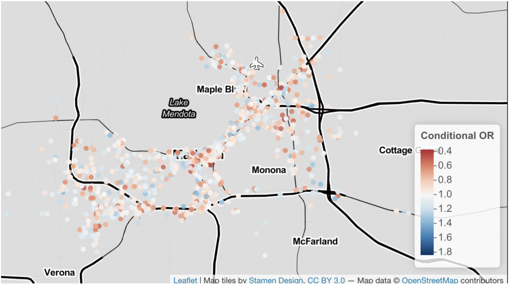
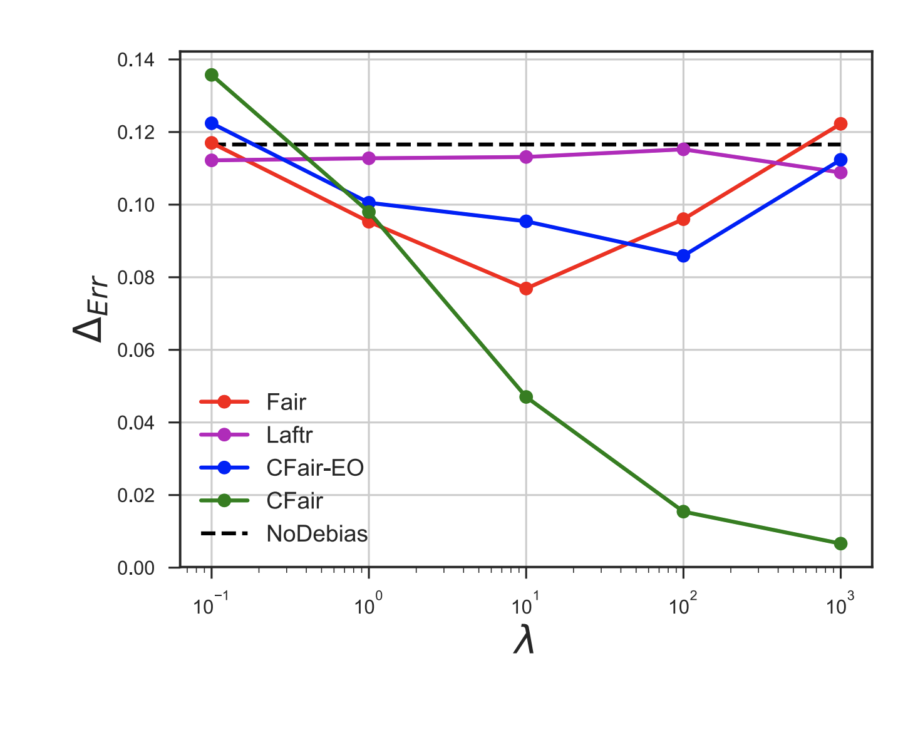

CV | Google Scholar | Github | Twitter |
Amanda Coston is a PhD student in Machine Learning and Public Policy at Carnegie Mellon University (CMU). She is interested in how machine learning can improve decision-making in societally high-stakes settings. She is particularly interested in how to make decision-making systems more reliable and more equitable. She is on the academic job market for 2022-2023. Her research addresses real-world data problems that challenge the reliability of algorithmic decision support systems and data-driven policy-making. A central focus of her research is identifying when algorithms, data used for policy-making, and human decisions disproportionately impact marginalized groups. Much of her work uses doubly-robust techniques for bias correction. She is advised by Alexandra Chouldechova and Edward H. Kennedy. Amanda is a Rising Star in EECS, Machine Learning and Data Science, Meta Research PhD Fellow, NSF GRFP Fellow and K & L Gates Presidential Fellow in Ethics and Computational Technologies. In 2019 she was a recipient of the Tata Consultancy Services (TCS) Presidential Fellowship. Her research on counterfactual risk assessments and evaluation for child welfare screening won the 2018 Suresh Konda Best First Student Research Paper Award from the Heinz College. |
| Nov 15, 2022 | Our paper on evaluating justifiability of ML in high-stakes decisions was accepted to SATML. Looking forward to presenting in Raleigh in February! |
| Nov 10, 2022 | |
| Nov 01, 2022 | |
| Oct 18, 2022 | |
| Oct 13, 2022 | 🏆 Accepted to Rising Stars in Data Science at the University of Chicago in Nov 2022! |
| Oct 10, 2022 | 🏆 Accepted to Rising Stars in Machine Learning at the University of Maryland in Nov 2022! |
| Oct 06, 2022 | Presented a poster on validity in decision making algorithms at EAAMO and attending the doctoral consortium! |
| Oct 02, 2022 | |
| Sep 23, 2022 | |
| Sep 12, 2022 | Check out our draft of counterfactual risk assessments under unmeasured confounding with Ashesh Rambachan and Ed Kennedy. |
| Aug 16, 2022 | Attended the CCC and INFORMS Artificial Intelligence/Operations Research Workshop in Atlanta, GA. |
| Aug 01, 2022 | 🏆 Accepted to Rising Stars in EECS at UT-Austin in Oct 2022! |
| Jul 19, 2022 | Validity in ML paper accepted to Conference on Equity and Access in Algorithms, Mechanisms, and Optimization (EAAMO) (joint work with Anna, Haiyi, Ken, and Hoda). |
| Jul 19, 2022 | Released preprint of our manuscript on role of the geometric mean in case-control studies (joint work with Edward Kennedy). |
| Jul 15, 2022 | |
| Jun 30, 2022 | Released a pre-print of our paper on using validity as a lens to evaluate justified use of data-driven decision making (joint work with Anna, Haiyi, Ken, and Hoda). |
| Jun 24, 2022 | Chaired the session on responsible data management at ACM FAccT 2022. |
| May 24, 2022 | |
| May 24, 2022 | Poster session at ACIC on counterfactual risk assessments under unmeasured confounding (joint work with Ashesh Rambachan and Edward Kennedy). |
| Mar 15, 2022 | 🏆 Accepted to FAccT doctoral consortium in Seoul, South Korea! |
| Feb 12, 2022 | 🏆 Accepted to University of Michigan Michigan Future Leaders Summit hosted by Michigan Institute for Data Science (MIDAS)! |
| Feb 4, 2022 | Proposed thesis, Principled Machine Learning for High-stakes Decisions. Committee: Ed Kennedy, Alex Chouldechova, Hoda Heidari, & Sendhil Mullainathan |
| Feb 2, 2022 | 🏆 Awarded the Meta Research PhD Fellowship! Thanks Meta Research for the support! |
| Oct 21, 2021 | |
| Sep, 2021 | Joined the Graduate Student Assembly Campus Affairs Committee where I will focus on sustainability efforts at CMU. |
| Jun 07, 2021 | Started internship at Facebook Responsible AI. |
| May 18, 2021 | Featured on Placekey Spotlight. |
| May 08, 2021 | Our research paper on characterizing fairness over the set of good models under selective labels accepted at ICML 2021. |
| May 04, 2021 | |
| Apr 22, 2021 | |
| Apr 16, 2021 | CMU ML Blog Post on counterfactual predictions under runtime confounding. |
| Apr 05, 2021 | The Wall Street Journal featured our research on auditing mobility data for demographic bias! The piece is titled Smartphone Location Data Can Leave Out Those Most Hit by Covid-19. |
| Nov 18, 2020 | VentureBeat featured our research on auditing mobility data for demographic bias! The piece is titled Stanford and Carnegie Mellon find race and age bias in mobility data that drives COVID-19 policy. |
|  |
Oral presentation (20% selection rate)
Abstract |
Talk
Racial bias in criminal justice has profound consequences. This bias harms not only the participant of the encounter but also has far-reaching implications, particularly in the era of big data. These interactions are often recorded and used to build algorithms that shape future encounters with the criminal justice system. In order to guard against automating biases in these high-stakes algorithms, we must identify when and where bias occurs in the criminal justice pipeline. We consider racial bias in one of the most common points of entry: police traffic stops. Building on the tradition that uses the "veil of darkness" to test for racial bias in officer's decisions to stop, we propose a counterfactual audit for racial bias that clarifies the assumptions needed to identify racial bias. A central challenge is that standard measures of effect are not identifiable due to the outcome-dependent sampling of police traffic stop data. As a solution, we identify an odds ratio that recovers a test for differences in the race-conditional risk ratios under Bernoulli sampling. We propose an efficient estimator for the identified odds ratio using doubly-robust techniques that allow for flexible, non-parametric estimation. We present empirical results on the Stanford Open Policing data. |
|
Abstract |
ArXiv
Historically used in settings where the outcome is rare or data collection is expensive, outcome-dependent sampling is relevant to many modern settings where data is readily available for a biased sample of the target population, such as public administrative data. Under outcome-dependent sampling, common effect measures such as the average risk difference and the average risk ratio are not identified, but the conditional odds ratio is. Aggregation of the conditional odds ratio is challenging since summary measures are generally not identified. Furthermore, the marginal odds ratio can be larger (or smaller) than all conditional odds ratios. This so-called non-collapsibility of the odds ratio is avoidable if we use an alternative aggregation to the standard arithmetic mean. We provide a new definition of collapsibility that makes this choice of aggregation method explicit, and we demonstrate that the odds ratio is collapsible under geometric aggregation. We describe how to partially identify, estimate, and do inference on the geometric odds ratio under outcome-dependent sampling. Our proposed estimator is based on the efficient influence function and therefore has doubly robust-style properties. |
|
|
Abstract |
Paper
Statistical risk assessments inform consequential decisions such as pretrial release in criminal justice, and loan approvals in consumer finance. Such risk assessments make counterfactual predictions, predicting the likelihood of an outcome under a proposed decision (e.g., what would happen if we approved this loan?). A central challenge, however, is that there may have been unobserved confounders that jointly affected past decisions and outcomes in the historical data. This paper proposes a tractable mean outcome sensitivity model that bounds the extent to which unmeasured confounders could affect outcomes on average. The mean outcome sensitivity model partially identifies the conditional likelihood of the outcome under the proposed decision as well as popular predictive performance metrics (accuracy, calibration, TPR, FPR, etc.) and commonly-used predictive disparities, and we derive their sharp identified sets. We then solve three tasks that are essential to deploying statistical risk assessments in high-stakes settings. First, we propose a learning procedure based on doubly-robust pseudo-outcomes that estimates bounds on the conditional likelihood of the outcome under the proposed decision, and derive a bound on its integrated mean square error. Second, we show how our estimated bounds on the conditional likelihood of the outcome under the proposed decision can be translated into a robust, plug-in decision-making policy, and derive bounds on its worst-case regret relative to the max-min optimal decision rule. Third, we develop estimators of the bounds on the predictive performance metrics of existing risk assessment that are based on efficient influence functions and cross-fitting, and only require black-box access to the risk assessment. |
|
Abstract |
Paper |
ArXiv
Recent research increasingly brings to question the appropriateness of using predictive tools in complex, real-world tasks. While a growing body of work has explored ways to improve value alignment in these tools, comparatively less work has centered concerns around the fundamental justifiability of using these tools. This work seeks to center validity considerations in deliberations around whether and how to build data-driven algorithms in high-stakes domains. Toward this end, we translate key concepts from validity theory to predictive algorithms. We apply the lens of validity to re-examine common challenges in problem formulation and data issues that jeopardize the justifiability of using predictive algorithms and connect these challenges to the social science discourse around validity. Our interdisciplinary exposition clarifies how these concepts apply to algorithmic decision making contexts. We demonstrate how these validity considerations could distill into a series of high-level questions intended to promote and document reflections on the legitimacy of the predictive task and the suitability of the data. |
|
|
ACM Conference on Fairness, Accountability, and Transparency (FAccT), 2021
Abstract |
Paper |
ArXiv |
Talk
Anonymized smartphone-based mobility data has been widely adopted in devising and evaluating COVID-19 response strategies such as the targeting of public health resources. Yet little attention has been paid to measurement validity and demographic bias, due in part to the lack of documentation about which users are represented as well as the challenge of obtaining ground truth data on unique visits and demographics. We illustrate how linking large-scale administrative data can enable auditing mobility data for bias in the absence of demographic information and ground truth labels. More precisely, we show that linking voter roll data containing individual-level voter turnout for specific voting locations along with race and age can facilitate the construction of rigorous bias and reliability tests. Using data from North Carolina's 2018 general election, these tests illuminate a sampling bias that is particularly noteworthy in the pandemic context: older and non-white voters are less likely to be captured by mobility data. We show that allocating public health resources based on such mobility data could disproportionately harm high-risk elderly and minority groups. |
|
 |
Abstract |
Paper |
ArXiv |
Talk
Algorithmic risk assessments are used to inform decisions in a wide variety of high-stakes settings. Often multiple predictive models deliver similar overall performance but differ markedly in their predictions for individual cases, an empirical phenomenon known as the "Rashomon Effect." These models may have different properties over various groups, and therefore have different predictive fairness properties. We develop a framework for characterizing predictive fairness properties over the set of models that deliver similar overall performance, or "the set of good models." Our framework addresses the empirically relevant challenge of selectively labelled data in the setting where the selection decision and outcome are unconfounded given the observed data features. Our framework can be used to 1) replace an existing model with one that has better fairness properties; or 2) audit for predictive bias. We illustrate these uses cases on a real-world credit-scoring task and a recidivism prediction task. |
|
Abstract |
Paper |
ArXiv |
Blog
Algorithms are commonly used to predict outcomes under a particular decision or intervention, such as predicting whether an offender will succeed on parole if placed under minimal supervision. Generally, to learn such counterfactual prediction models from observational data on historical decisions and corresponding outcomes, one must measure all factors that jointly affect the outcomes and the decision taken. Motivated by decision support applications, we study the counterfactual prediction task in the setting where all relevant factors are captured in the historical data, but it is either undesirable or impermissible to use some such factors in the prediction model. We refer to this setting as runtime confounding. We propose a doubly-robust procedure for learning counterfactual prediction models in this setting. Our theoretical analysis and experimental results suggest that our method often outperforms competing approaches. We also present a validation procedure for evaluating the performance of counterfactual prediction methods. |
|
 |
Abstract |
Paper |
ArXiv |
Talk
Algorithmic risk assessments are increasingly used to help humans make decisions in high-stakes settings, such as medicine, criminal justice and education. In each of these cases, the purpose of the risk assessment tool is to inform actions, such as medical treatments or release conditions, often with the aim of reducing the likelihood of an adverse event such as hospital readmission or recidivism. Problematically, most tools are trained and evaluated on historical data in which the outcomes observed depend on the historical decision-making policy. These tools thus reflect risk under the historical policy, rather than under the different decision options that the tool is intended to inform. Even when tools are constructed to predict risk under a specific decision, they are often improperly evaluated as predictors of the target outcome. Focusing on the evaluation task, in this paper we define counterfactual analogues of common predictive performance and algorithmic fairness metrics that we argue are better suited for the decision-making context. We introduce a new method for estimating the proposed metrics using doubly robust estimation. We provide theoretical results that show that only under strong conditions can fairness according to the standard metric and the counterfactual metric simultaneously hold. Consequently, fairness-promoting methods that target parity in a standard fairness metric may --- and as we show empirically, do --- induce greater imbalance in the counterfactual analogue. We provide empirical comparisons on both synthetic data and a real world child welfare dataset to demonstrate how the proposed method improves upon standard practice. |
|  |
(ICLR), 2020
Abstract |
Paper |
ArXiv |
Talk
We propose a novel algorithm for learning fair representations that can simultaneously mitigate two notions of disparity among different demographic subgroups in the classification setting. Two key components underpinning the design of our algorithm are balanced error rate and conditional alignment of representations. We show how these two components contribute to ensuring accuracy parity and equalized false-positive and false-negative rates across groups without impacting demographic parity. Furthermore, we also demonstrate both in theory and on two real-world experiments that the proposed algorithm leads to a better utility-fairness trade-off on balanced datasets compared with existing algorithms on learning fair representations for classification. |
 |
International Conference on Artificial Intelligence in Medicine, 2020
Abstract |
Paper |
ArXiv
In time-to-event prediction problems, a standard approach to estimating an interpretable model is to use Cox proportional hazards, where features are selected based on lasso regularization or stepwise regression. However, these Cox-based models do not learn how different features relate. As an alternative, we present an interpretable neural network approach to jointly learn a survival model to predict time-to-event outcomes while simultaneously learning how features relate in terms of a topic model. In particular, we model each subject as a distribution over "topics", which are learned from clinical features as to help predict a time-to-event outcome. From a technical standpoint, we extend existing neural topic modeling approaches to also minimize a survival analysis loss function. We study the effectiveness of this approach on seven healthcare datasets on predicting time until death as well as hospital ICU length of stay, where we find that neural survival-supervised topic models achieves competitive accuracy with existing approaches while yielding interpretable clinical "topics" that explain feature relationships. |
|
Abstract |
Paper
Risk assessment is a growing use for machine learning models. When used in high-stakes applications, especially ones regulated by anti-discrimination laws or governed by societal norms for fairness, it is important to ensure that learned models do not propagate and scale any biases that may exist in training data. In this paper, we add on an additional challenge beyond fairness: unsupervised domain adaptation to covariate shift between a source and target distribution. Motivated by the real-world problem of risk assessment in new markets for health insurance in the United States and mobile money-based loans in East Africa, we provide a precise formulation of the machine learning with covariate shift and score parity problem. Our formulation focuses on situations in which protected attributes are not available in either the source or target domain. We propose two new weighting methods: prevalence-constrained covariate shift (PCCS) which does not require protected attributes in the target domain and target-fair covariate shift (TFCS) which does not require protected attributes in the source domain. We empirically demonstrate their efficacy in two applications. |
Opioid EpidemicIn 2017, drug overdoses claimed more lives than car accidents. The below maps show opioid hotspots across the United States at various granularities. We used a similarity metric of death rate trajectories derived from Fisher's exact test to perform hierarchical clustering. |
| 2022 | Rising Star in Data Science at the University of Chicago. |
| 2022 | Rising Star in Machine Learning at the University of Maryland. |
| 2022 | Rising Star in EECS 2022 at UT-Austin. |
| 2022 | Meta Research PhD Fellow. |
| 2022 | Future Leader in Responsible Data Science. |
| 2020 | K & L Gates Presidential Fellow in Ethics and Computational Technologies. |
| 2019 | Tata Consultancy Services (TCS) Presidential Fellowship. |
| 2018 | Suresh Konda Best First Student Research Paper Award from the Heinz College for counterfactual evaluation in child welfare. |
| 2018 | NSF GRFP Fellow. |
| Amanda particularly enjoys teaching and mentorship opportunties. She served as a teaching assistant for Matt Gormley and Tom Mitchell's Introduction to Machine Learning in 2021. She served as a project lead of the AI4ALL summer program at CMU, where she introduced high school students to algorithmic fairness in the criminal justice system using the COMPAS dataset (see Github project). She also participates in the AI undergradate mentoring program and at CMU. As an undergraduate, she was a teaching assistant for Brian Kernighan's Computers in our World course at Princeton. |
| Steering Committee | ML4D workshop 2022, 2021, 2020, 2019. |
| Referee | Nature Human Behaviour. |
| Referee | JASA. |
| Referee | Journal of Royal Statistical Society Series B. |
| Referee | Data Mining and Knowledge Discovery. |
| Reviewer | ICLR 2023, 2022. |
| Ethical reviewer | NeurIPS 2022, 2021. |
| Reviewer | NeurIPS 2022, 2021, 2020. |
| Reviewer | NeurIPS Datasets and Benchmarks 2022, 2021. |
| Program Committee | EAAMO 2022. |
| Program Committee | FAccT 2022, 2021, 2020. |
| Reviewer | ICML 2022, 2021, 2020. |
| Area Chair | ICLR Workshop on Responsible AI 2021. |
| Program Commitee | AIES 2020. |
| Program Committee | AAAI Emerging Track on AI for Social Impact 2020. |
| Program Committee | IJCAI Workshop on AI for Social Good 2019. |
| Co-organizer | Fairness, Ethics, Accountability, and Transparency (FEAT) reading group at CMU 2019-2020. |
| Co-organizer | ML4D workshop at NeurIPS 2018 and NeurIPS 2019. ML4D showcases ML research by and for the developing world. |
| Amanda graduated from Princeton University in 2013 with a degree in computer science and a certificate in the Princeton School of Public Policy and International Affairs. For her undergraduate thesis, she analyzed how machine learning techniques can improve the diagnosis of pediatric tuberculosis in collaboration with Jocelyn Tang ('14) and under the guidance of Robert Schapire. In 2019 she earned her Master of Science in Machine Learning from CMU. |
|
Hamburg Hall |
Template modified from here |